<!DOCTYPE html>
<html lang="en">
  <head>
    <meta charset="utf-8" />
    <meta name="viewport" content="width=device-width, initial-scale=1.0, maximum-scale=1.0, user-scalable=no" />

    <title></title>
    <link rel="stylesheet" href="dist/reveal.css" />
    <link rel="stylesheet" href="dist/theme/serif.css" id="theme" />
    <link rel="stylesheet" href="plugin/highlight/monokai.css" />
	<link rel="stylesheet" href="css/layout.css" />
	<link rel="stylesheet" href="plugin/customcontrols/style.css">
	<link rel="stylesheet" href="plugin/chalkboard/style.css">

	<link rel="stylesheet" href="plugin/reveal-pointer/pointer.css" />


    <script defer src="dist/fontawesome/all.min.js"></script>

	<script type="text/javascript">
		var forgetPop = true;
		function onPopState(event) {
			if(forgetPop){
				forgetPop = false;
			} else {
				parent.postMessage(event.target.location.href, "app://obsidian.md");
			}
        }
		window.onpopstate = onPopState;
		window.onmessage = event => {
			if(event.data == "reload"){
				window.document.location.reload();
			}
			forgetPop = true;
		}

		function fitElements(){
			const itemsToFit = document.getElementsByClassName('fitText');
			for (const item in itemsToFit) {
				if (Object.hasOwnProperty.call(itemsToFit, item)) {
					var element = itemsToFit[item];
					fitElement(element,1, 1000);
					element.classList.remove('fitText');
				}
			}
		}

		function fitElement(element, start, end){

			let size = (end + start) / 2;
			element.style.fontSize = `${size}px`;

			if(Math.abs(start - end) < 1){
				while(element.scrollHeight > element.offsetHeight){
					size--;
					element.style.fontSize = `${size}px`;
				}
				return;
			}

			if(element.scrollHeight > element.offsetHeight){
				fitElement(element, start, size);
			} else {
				fitElement(element, size, end);
			}		
		}


		document.onreadystatechange = () => {
			fitElements();
			if (document.readyState === 'complete') {
				if (window.location.href.indexOf("?export") != -1){
					parent.postMessage(event.target.location.href, "app://obsidian.md");
				}
				if (window.location.href.indexOf("print-pdf") != -1){
					let stateCheck = setInterval(() => {
						clearInterval(stateCheck);
						window.print();
					}, 250);
				}
			}
	};


        </script>
  </head>
  <body>
    <div class="reveal">
      <div class="slides"><section ><section data-markdown><script type="text/template"><!-- .slide: class="has-light-background drop" data-background-color="#e5f3e0" -->
<div class="" style="position: absolute; left: 0px; top: 0px; height: 800px; width: 1600px; min-height: 800px; display: flex; flex-direction: column; align-items: center; justify-content: center" absolute="true">

<style>
/* Inline `code` — color without touching fenced <pre><code> (monokai) */
.reveal :not(pre) > code {
  color: #c7254e;
  background-color: rgba(199, 37, 78, 0.1);
  padding: 0.05em 0.35em;
  border-radius: 0.25em;
}
</style>


## AI for Developers: Adoption via Engineering Practices
</div></script></section><section data-markdown><script type="text/template"><!-- .slide: class="drop" -->
<div class="" style="position: absolute; left: 0px; top: 0px; height: 800px; width: 1600px; min-height: 800px; display: flex; flex-direction: column; align-items: center; justify-content: center" absolute="true">

## Module #5: AI Usage Optimization
</div></script></section><section data-markdown><script type="text/template"><!-- .slide: class="drop" -->
<div class="" style="position: absolute; left: 0px; top: 0px; height: 800px; width: 1600px; min-height: 800px; display: flex; flex-direction: column; align-items: center; justify-content: center" absolute="true">

## Table of Contents

- SkillStack. Optimization Examples
- General Tips for Saving Tokens
  <!-- - Right Engine -->
  <!-- - Right Promp -->
- Q&A

<!-- .element: style="font-size: 2.0rem" -->
</div></script></section></section><section  data-markdown><script type="text/template"><!-- .slide: class="has-light-background drop" data-background-color="#e5f3e0" -->
<div class="" style="position: absolute; left: 0px; top: 0px; height: 800px; width: 1600px; min-height: 800px; display: flex; flex-direction: column; align-items: center; justify-content: center" absolute="true">

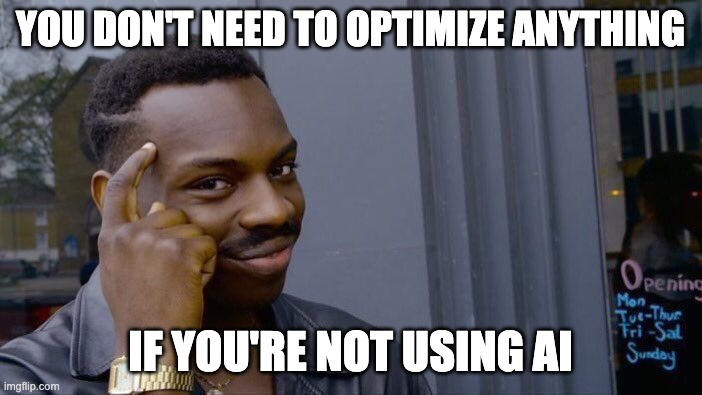


notes:

You don't need to optimize anything if you are not using AI. Bridge into the meter.
</div></script></section><section ><section data-markdown><script type="text/template"><!-- .slide: class="has-light-background drop" data-background-color="#e5f3e0" -->
<div class="" style="position: absolute; left: 0px; top: 0px; height: 800px; width: 1600px; min-height: 800px; display: flex; flex-direction: column; align-items: center; justify-content: center" absolute="true">

## SkillStack

Optimization examples
</div></script></section><section data-markdown><script type="text/template"><!-- .slide: class="drop" -->
<div class="" style="position: absolute; left: 0px; top: 0px; height: 800px; width: 1600px; min-height: 800px; display: flex; flex-direction: column; align-items: center; justify-content: center" absolute="true">

### What is already in the window?

<div class="block">

Before the model opens a single project file, this repo has loaded:

- `AGENTS.md` — the package map
- 2 rules with `alwaysApply: true`: `code-comments.mdc`, `git-history-scope.mdc`
- descriptions of **21 skills** (The bodies of those skills are still on disk)
- the agent catalog (`spark`, `octopus`, `e2eagle`, `unituna`, `triage`)
- MCP servers: `github`, `eleks-ui`, `playwright`

</div>

<!-- .element: style="font-size: 1.9rem" -->
</div></script></section><section data-markdown><script type="text/template"><!-- .slide: class="drop" -->
<div class="" style="position: absolute; left: 0px; top: 0px; height: 800px; width: 1600px; min-height: 800px; display: flex; flex-direction: column; align-items: center; justify-content: center" absolute="true">

### Standing rules work like a subscription

<div class="block">

| Rule                | Why it is always on                          |
| ------------------- | -------------------------------------------- |
| `code-comments`     | Every edit can grow the next read            |
| `git-history-scope` | Implementation search is the expensive habit |

Other rules set `alwaysApply: false` and wait for a matching file.

</div>

<!-- .element: style="font-size: 1.75rem" -->
</div></script></section><section data-markdown><script type="text/template"><!-- .slide: class="drop" -->
<div class="" style="position: absolute; left: 0px; top: 0px; height: 800px; width: 1600px; min-height: 800px; display: flex; flex-direction: column; align-items: center; justify-content: center" absolute="true">

### Glob rules — pay on contact

<div class="block">

| Rule                        | Loads when                   |
| --------------------------- | ---------------------------- |
| `react-client`              | a file under `client/`       |
| `test-conventions`          | a `*.spec.ts` / `*.spec.tsx` |
| `typescript-best-practices` | any `.ts` / `.tsx`           |
| `naming-convention`         | JS or TS                     |
| `js-import-order`           | JS or TS                     |
| `single-responsibility`     | any `.ts` / `.tsx`           |

</div>

<!-- .element: style="font-size: 1.6rem" -->
</div></script></section><section data-markdown><script type="text/template"><!-- .slide: class="drop" -->
<div class="" style="position: absolute; left: 0px; top: 0px; height: 800px; width: 1600px; min-height: 800px; display: flex; flex-direction: column; align-items: center; justify-content: center" absolute="true">

### A skill has three prices

<div class="block">

| Layer              | When you pay              | What belongs there                  |
| ------------------ | ------------------------- | ----------------------------------- |
| **Description**    | every chat                | one or two lines, enough to choose  |
| **`SKILL.md`**     | the task matches          | the gate, the order, the hard rules |
| **`reference.md`** | the skill says to open it | prompts, examples, long steps       |

Procedures in the description are prepaid forever.

</div>

<!-- .element: style="font-size: 1.7rem" -->
</div></script></section><section data-markdown><script type="text/template"><!-- .slide: class="drop" -->
<div class="" style="position: absolute; left: 0px; top: 0px; height: 800px; width: 1600px; min-height: 800px; display: flex; flex-direction: column; align-items: center; justify-content: center" absolute="true">

### ⚖️ Triage is a cost router

Score each dimension Low or High:

<div class="block">

| Dimension               | Low (→ simple)                                   | High (→ complex)                                                       |
| ----------------------- | ------------------------------------------------ | ---------------------------------------------------------------------- |
| **Blast radius**        | 1–2 files, one package                           | Many files, ≥2 packages, or shared contracts                           |
| **Layer crossing**      | Single layer (UI only, or one service only)      | Client + Functions + shared types/API, or CLI + backend                |
| **Domain uncertainty**  | Clear acceptance criteria; obvious analog exists | Ambiguous requirements; new domain concept;                            |
| **Data / contracts**    | No schema or API shape breaking changes          | Breaking changes of shema, public API, Firestore shape, Zod, auth, etc |
| **Architecture risk**   | Fits existing patterns; no AD tension            | Introducing new architecture patterns and/or breaking existing one     |
| **Migration / rollout** | Additive, reversible                             | Data backfill, dual-write, feature flag, or irreversible migrate       |

</div>


<!-- .element: style="font-size: 1.6rem" -->

<div class="block">

Any High → `octopus`. All Low → `spark`.

A wrong `complex` buys a planning model and a wide search. A wrong `simple` on a contract
change buys a failed attempt and an escalation.

</div>

<!-- .element: style="font-size: 1.7rem" -->
</div></script></section><section data-markdown><script type="text/template"><!-- .slide: class="drop" -->
<div class="" style="position: absolute; left: 0px; top: 0px; height: 800px; width: 1600px; min-height: 800px; display: flex; flex-direction: column; align-items: center; justify-content: center" absolute="true">

### 💥 Spark and 🐙 Octopus

<div class="block">

|         | **Spark**                           | **Octopus**                                 |
| ------- | ----------------------------------- | ------------------------------------------- |
| Job     | Fast leaf for a **simple** task     | Planning-first for a **complex** task       |
| Model   | `composer-2.5`                      | `claude-sonnet-5`                           |
| Does    | Smallest safe change, then stop     | Decompose, check contracts, vertical slices |
| Doesn't | Architect, or refactor across files | Skip the plan and dive in                   |

</div>

 <!-- .element: style="font-size: 1.7rem" -->

> 📌 **Rule:** classify the task first. Then pick the specialist.

<!-- .element: style="font-size: 2.0rem" class="fragment" data-fragment-index="1" -->

notes:

Spark — fast simple-task implementer. Goal: the smallest safe change that meets the
requirement, validate it, and stop. Not an architect. Not a multi-file refactorer.

Octopus — complex multi-module implementer. Architectural decisions, multi-file or
cross-cutting work. Goal: decompose, verify patterns and contracts, implement in
deliberate vertical slices, surface architectural decisions, and stop.
</div></script></section><section data-markdown><script type="text/template"><!-- .slide: class="drop" -->
<div class="" style="position: absolute; left: 0px; top: 0px; height: 800px; width: 1600px; min-height: 800px; display: flex; flex-direction: column; align-items: center; justify-content: center" absolute="true">

### Skip triage when the task is already scoped

`implement-flow`

```md[]
**Skip** only when the user clearly wants no file changes, when `review-flow`,
`git-commit`, or `update-adr` fits instead, when the request is only about tests
(a dedicated test skill applies), when implement is already mid-flight
for the same task, or when only agent config under the config root changes (edit those
files directly). A question that ends in "fix it" is not a skip. If unsure, ask
one clarifying question before editing anything.
```

<div class="block">

Inline fast path — all four must hold:

1. The user names the **exact file**
2. The change stays in that file, in one package
3. No exported signature, schema, Firestore shape, or API contract
4. No new dependency

Then the verdict is `simple` → `spark`. No classification call.

If any line is uncertain, run triage.

</div>

<!-- .element: style="font-size: 1.7rem" -->
</div></script></section><section data-markdown><script type="text/template"><!-- .slide: class="drop" -->
<div class="" style="position: absolute; left: 0px; top: 0px; height: 800px; width: 1600px; min-height: 800px; display: flex; flex-direction: column; align-items: center; justify-content: center" absolute="true">

### 💥 `spark` is told when to stop reading

<div class="block">

- Investigate only what the change needs
- Do not open unrelated modules
- Do not refactor code that merely looks imperfect
- Do not add the feature nobody requested

An extra file is not free curiosity. It is output that the rest of the chat keeps.
</div></script></section><section data-markdown><script type="text/template"><!-- .slide: class="drop" -->
<div class="" style="position: absolute; left: 0px; top: 0px; height: 800px; width: 1600px; min-height: 800px; display: flex; flex-direction: column; align-items: center; justify-content: center" absolute="true">

### Rule 🧾 `git-history-scope` blocks the expensive search

<div class="block">

While implementing new functionality, the agent may use the working tree and history
reachable from `HEAD`.

It may not:

- `git log --all`, `--branches`, `--remotes`
- `git show` of another branch's file
- fetch or open a PR just to discover an implementation

If another branch might matter, **name it**. Do not read it.

</div>

<!-- .element: style="font-size: 1.65rem" -->
</div></script></section><section data-markdown><script type="text/template"><!-- .slide: class="drop" -->
<div class="" style="position: absolute; left: 0px; top: 0px; height: 800px; width: 1600px; min-height: 800px; display: flex; flex-direction: column; align-items: center; justify-content: center" absolute="true">

### Rule 🧾 `react-client`

Impoves situation with linting errors

<!-- prettier-ignore -->
```md
--- 
description: React conventions — hooks placement, render purity, effects, module exports
globs: "client/**/*.{ts,tsx}"
alwaysApply: false
--- 

# React best practices

...more
```

<div class="block">

- Captures local React conventions so the agent doesn't have to inspect components just to
  match the style.
- Short “bad / good” pairs and a checklist prevent common rewrites on the first pass.
- One compact example is cheaper than resending the same file repeatedly.

</div>


<!-- .element: style="font-size: 1.6rem" -->
</div></script></section><section data-markdown><script type="text/template"><!-- .slide: class="drop" -->
<div class="" style="position: absolute; left: 0px; top: 0px; height: 800px; width: 1600px; min-height: 800px; display: flex; flex-direction: column; align-items: center; justify-content: center" absolute="true">

### The handoff hook caps retries

<div class="block">

`.cursor/hooks.json` listens for `subagentStop` on `spark` and `octopus`.

`validate-agent-handoff.mjs` checks that the reply is a structured result: status `done`
or `escalated`, plus the fields that executor owes.

`loop_limit: 1` — one correction, not a retry loop.

</div>

<!-- .element: style="font-size: 1.75rem" -->
</div></script></section><section data-markdown><script type="text/template"><!-- .slide: class="drop" -->
<div class="" style="position: absolute; left: 0px; top: 0px; height: 800px; width: 1600px; min-height: 800px; display: flex; flex-direction: column; align-items: center; justify-content: center" absolute="true">

### Tests and ADRs are a question

<div class="block">

After a successful implement, the parent asks **once**.

| Answer        | What runs                                   |
| ------------- | ------------------------------------------- |
| Yes to tests  | 🐟 `unituna` or 🦅 `e2eagle`, one at a time |
| No            | the task is done                            |
| Yes to an ADR | one writer, after tests are settled         |

<!-- `check-duplicates` reports first and refactors only after a separate approval.  -->

</div>

<!-- .element: style="font-size: 1.7rem" -->
</div></script></section><section data-markdown><script type="text/template"><!-- .slide: class="drop" -->
<div class="" style="position: absolute; left: 0px; top: 0px; height: 800px; width: 1600px; min-height: 800px; display: flex; flex-direction: column; align-items: center; justify-content: center" absolute="true">

### Review only what the diff earned

<div class="block">

`review-flow` always plans coverage, security, defects, and acceptance.

Optional gates run only on a trigger:

| Gate            | Trigger                                  |
| --------------- | ---------------------------------------- |
| Complexity      | TS/JS in `client`, `functions`, or `cli` |
| Duplicates      | 3+ source files, or new shared logic     |
| `npm audit`     | `package.json` or a lockfile             |
| Firestore rules | rules, store layer, or auth paths        |
| ELEKS UI        | client UI components or pages            |

Skipped checks are recorded as `skipped — reason`.

</div>

<!-- .element: style="font-size: 1.45rem" -->
</div></script></section><section data-markdown><script type="text/template"><!-- .slide: class="drop" data-visibility="hidden" -->
<div class="" style="position: absolute; left: 0px; top: 0px; height: 800px; width: 1600px; min-height: 800px; display: flex; flex-direction: column; align-items: center; justify-content: center" absolute="true">


</div></script></section><section data-markdown><script type="text/template"><!-- .slide: class="drop" -->
<div class="" style="position: absolute; left: 0px; top: 0px; height: 800px; width: 1600px; min-height: 800px; display: flex; flex-direction: column; align-items: center; justify-content: center" absolute="true">

### 🙈 `.cursorignore`

Cursor already skips paths in `.gitignore`.

Add paths git tracks but the Agent should not read

Force-include an exception with a `!` prefix

> 💡 Tip:
> [cursor.com/docs/reference/ignore-file](https://cursor.com/docs/reference/ignore-file#files-ignored-by-default)

<!-- .element: style="font-size: 2.0rem" class="fragment" data-fragment-index="3" -->
</div></script></section><section data-markdown><script type="text/template"><!-- .slide: class="drop" -->
<div class="" style="position: absolute; left: 0px; top: 0px; height: 800px; width: 1600px; min-height: 800px; display: flex; flex-direction: column; align-items: center; justify-content: center" absolute="true">

### Tools you didn't invite

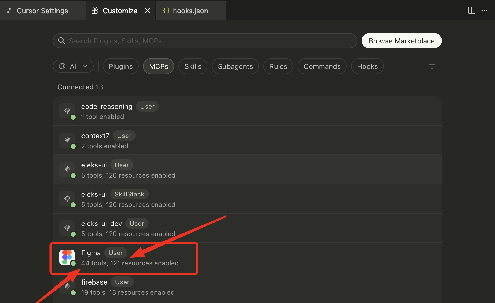


> 📌 **Rule:** Figma alone — 44 tools, 121 resources — all of it in context.

<!-- .element: style="font-size: 2.0rem" class="fragment" data-fragment-index="1" -->
</div></script></section><section data-markdown><script type="text/template"><!-- .slide: class="drop" -->
<div class="" style="position: absolute; left: 0px; top: 0px; height: 800px; width: 1600px; min-height: 800px; display: flex; flex-direction: column; align-items: center; justify-content: center" absolute="true">

### Keep you mcp.json clear

```json
{
  "mcpServers": {
    "github": {
      "url": "https://api.githubcopilot.com/mcp/",
      "headers": {
        "Authorization": "Bearer ${env:GITHUB_TOKEN}"
      }
    },
    "eleks-ui": {
      "command": "eleks-ui",
      "args": ["start-mcp"],
      "env": {
        "FIGMA_ACCESS_TOKEN": "${env:FIGMA_ACCESS_TOKEN}"
      }
    },
    "playwright": {
      "command": "npx",
      "args": ["@playwright/mcp@latest"]
    }
  }
}
```
</div></script></section><section data-markdown><script type="text/template"><!-- .slide: class="drop" -->
<div class="" style="position: absolute; left: 0px; top: 0px; height: 800px; width: 1600px; min-height: 800px; display: flex; flex-direction: column; align-items: center; justify-content: center" absolute="true">

### 🔌 Who else is in the context?

Check MCPs, Rules, and Skills. Filter **User**, **Team**, **Workspace**, **SkillStack**.

<!-- .element: class="fragment" data-fragment-index="1" -->

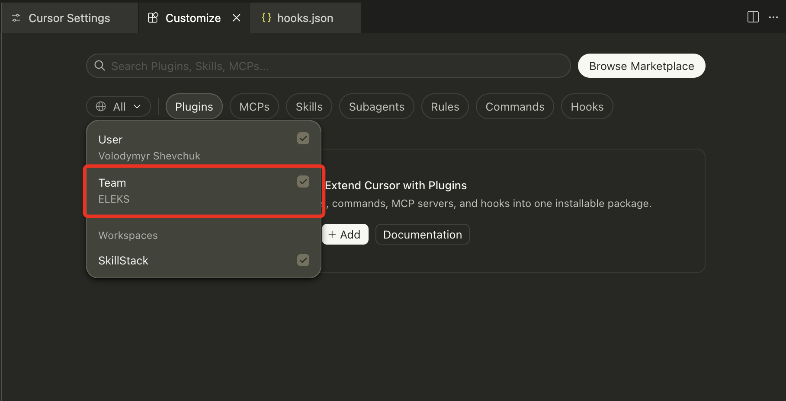


> 📌 **Rule:** Team config rides along even when this chat didn't ask for it.

<!-- .element: style="font-size: 2.0rem" class="fragment" data-fragment-index="2" -->
</div></script></section></section><section ><section data-markdown><script type="text/template"><!-- .slide: class="has-light-background drop" data-background-color="#e5f3e0" -->
<div class="" style="position: absolute; left: 0px; top: 0px; height: 800px; width: 1600px; min-height: 800px; display: flex; flex-direction: column; align-items: center; justify-content: center" absolute="true">


notes:

meme: Me on the first day of my AI subscription renewal
</div></script></section><section data-markdown><script type="text/template"><!-- .slide: class="drop" data-visibility="hidden" -->
<div class="" style="position: absolute; left: 0px; top: 0px; height: 800px; width: 1600px; min-height: 800px; display: flex; flex-direction: column; align-items: center; justify-content: center" absolute="true">


</div></script></section><section data-markdown><script type="text/template"><!-- .slide: class="drop" -->
<div class="" style="position: absolute; left: 0px; top: 0px; height: 800px; width: 1600px; min-height: 800px; display: flex; flex-direction: column; align-items: center; justify-content: center" absolute="true">

### Read your meter first

**Where**: `Cursor Settings → General → Usage` (or the dashboard on cursor.com)

- **Before a big Agent run** — note your current usage
- **After the run** — did one chat burn more than a day of Ask?
- **Team habit** — screenshot costly chats; turn them into rules or skills

> 💡 Tip: usage jumped and you don't know why? Open the chat → scroll the tool calls →
> count the file reads.

<!-- .element: style="font-size: 2.0rem" class="fragment" data-fragment-index="4" -->
</div></script></section><section data-markdown><script type="text/template"><!-- .slide: class="drop" -->
<div class="" style="position: absolute; left: 0px; top: 0px; height: 800px; width: 1600px; min-height: 800px; display: flex; flex-direction: column; align-items: center; justify-content: center" absolute="true">

### 🧾 After the run — read the bill

https://cursor.com/dashboard/usage

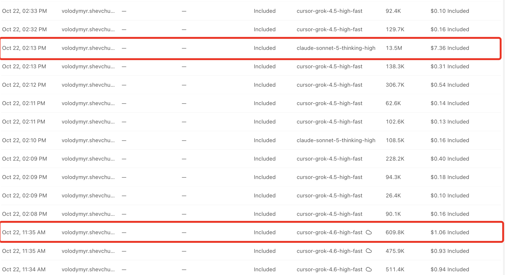
</div></script></section><section data-markdown><script type="text/template"><!-- .slide: class="drop" -->
<div class="" style="position: absolute; left: 0px; top: 0px; height: 800px; width: 1600px; min-height: 800px; display: flex; flex-direction: column; align-items: center; justify-content: center" absolute="true">

### 🔥 Same bug — two fuel bills

Task: _Login returns 401 after token refresh_

<div class="block">

| Expensive habit                          | Cheaper habit                                 |
| ---------------------------------------- | --------------------------------------------- |
| Agent + max model, no `@` refs           | Ask + fast model → find it → Agent on 2 files |
| Paste full `npm test` output (800 lines) | Paste the failing test name + 12-line stack   |
| 6 follow-ups in one 90-message chat      | New chat once the plan is approved            |
| Agent re-scans the repo every turn       | `@src/auth/token.ts` `@src/api/client.ts`     |

</div>


<!-- .element: style="font-size: 1.8rem" -->

> 📌 **Rule:** same fix — pay for **precision**, not for **scanning twice**.

<!-- .element: style="font-size: 2.0rem" class="fragment" data-fragment-index="1" -->

notes:

Show both prompts side by side in Cursor. The audience should see the difference in
tool-call count, not only in the slide text.
</div></script></section><section data-markdown><script type="text/template"><!-- .slide: class="drop" data-visibility="hidden" -->
<div class="" style="position: absolute; left: 0px; top: 0px; height: 800px; width: 1600px; min-height: 800px; display: flex; flex-direction: column; align-items: center; justify-content: center" absolute="true">


</div></script></section><section data-markdown><script type="text/template"><!-- .slide: class="drop" -->
<div class="" style="position: absolute; left: 0px; top: 0px; height: 800px; width: 1600px; min-height: 800px; display: flex; flex-direction: column; align-items: center; justify-content: center" absolute="true">

### 🧰 Example — OAuth bug

<div class="block">

| Step | You do                                              | Mode              |
| ---- | --------------------------------------------------- | ----------------- |
| 1    | `@tokenService.ts` — where is refresh called?       | **Ask**           |
| 2    | Paste the repro + limits → get a plan               | **Plan**          |
| 3    | Build steps 1–2 only (guard + test)                 | **Agent**         |
| 4    | Run `npm test auth.test.ts` yourself                | terminal          |
| 5    | Paste the new failure, or a **new chat** for step 3 | **Agent** / fresh |

</div>


<!-- .element: style="font-size: 1.65rem" -->

> 💡 Tip: do step 5 in a **new chat** + `@plan.md` — not 40 messages of old tool output.

<!-- .element: style="font-size: 2.0rem" class="fragment" data-fragment-index="1" -->
</div></script></section><section data-markdown><script type="text/template"><!-- .slide: class="drop" -->
<div class="" style="position: absolute; left: 0px; top: 0px; height: 800px; width: 1600px; min-height: 800px; display: flex; flex-direction: column; align-items: center; justify-content: center" absolute="true">

### 📎 Point at the file, not the repo

Use `@file` or `@function`. Leave `@codebase` and whole folders for later.

- @filename or one function — cheap and precise
- @folder or @codebase — hauls in weight you didn't ask for
- Don't say "read all of `src/`. Name the files

> 📌 **Rule:** <code>@codebase</code> is a last resort, not a greeting.

<!-- .element: style="font-size: 2.0rem" class="fragment" data-fragment-index="5" -->
</div></script></section><section data-markdown><script type="text/template"><!-- .slide: class="drop" -->
<div class="" style="position: absolute; left: 0px; top: 0px; height: 800px; width: 1600px; min-height: 800px; display: flex; flex-direction: column; align-items: center; justify-content: center" absolute="true">

### 🗜️ `/summarize` — shrink the tank

Ask Cursor to summarize the conversation and cut the context.

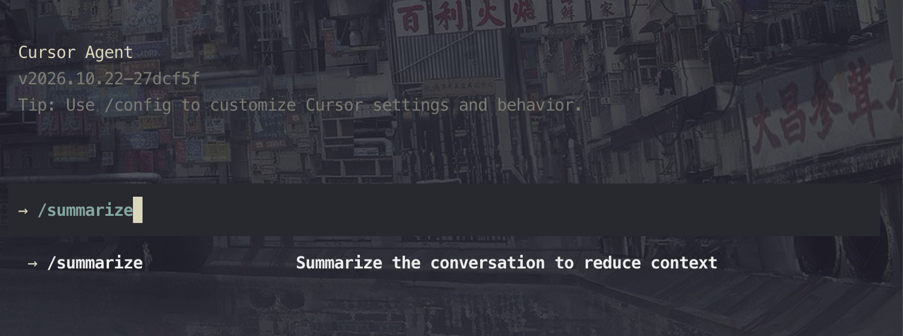


> 💡 Tip: run it while the thread is still useful — not after the bill.

<!-- .element: style="font-size: 2.0rem" class="fragment" data-fragment-index="1" -->

notes:

Demo the slash command. The palette line is "Summarize the conversation to reduce
context."
</div></script></section><section data-markdown><script type="text/template"><!-- .slide: class="drop" -->
<div class="" style="position: absolute; left: 0px; top: 0px; height: 800px; width: 1600px; min-height: 800px; display: flex; flex-direction: column; align-items: center; justify-content: center" absolute="true">

### ⏪ `/rewind` — jump back a message

Step back through the implementation, or through the agent thread.

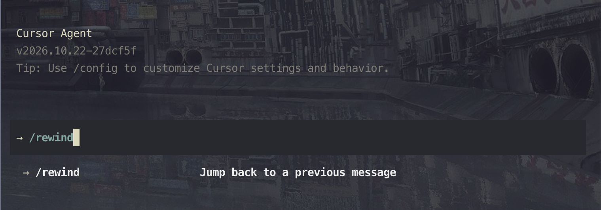


> 💡 Tip: the last turn went wrong? Rewind it. Don't write a correction essay.

<!-- .element: style="font-size: 2.0rem" class="fragment" data-fragment-index="1" -->

notes:

Demo `/rewind`. Palette copy: "Jump back to a previous message." Covers both the
implementation history and the chat history.
</div></script></section><section data-markdown><script type="text/template"><!-- .slide: class="drop" -->
<div class="" style="position: absolute; left: 0px; top: 0px; height: 800px; width: 1600px; min-height: 800px; display: flex; flex-direction: column; align-items: center; justify-content: center" absolute="true">

### 🍴 `/fork` — another road, same map

Try a different implementation without wrecking this chat.

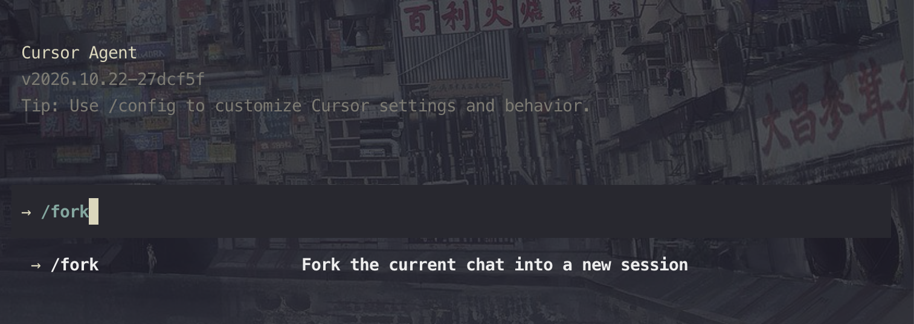


> 🎯 **Best for:** two designs you want side by side.

<!-- .element: style="font-size: 2.0rem" class="fragment" data-fragment-index="1" -->

notes:

Demo `/fork`. Palette copy: "Fork the current chat into a new session." Each fork is a
candidate — compare, then keep one.
</div></script></section></section><section ><section data-markdown><script type="text/template"><!-- .slide: class="has-light-background drop" data-background-color="#e5f3e0" -->
<div class="" style="position: absolute; left: 0px; top: 0px; height: 800px; width: 1600px; min-height: 800px; display: flex; flex-direction: column; align-items: center; justify-content: center" absolute="true">

## Right Engine


notes:

Walk the bands top to bottom. On the right — two quick questions for escalating the tier.
Stress: local = draft lane, not final QA.
</div></script></section><section data-markdown><script type="text/template"><!-- .slide: class="drop" -->
<div class="" style="position: absolute; left: 0px; top: 0px; height: 800px; width: 1600px; min-height: 800px; display: flex; flex-direction: column; align-items: center; justify-content: center" absolute="true">

### 🏎️ Not every job needs the sports car

<div class="block">

| Signal                              | Route                        |
| ----------------------------------- | ---------------------------- |
| Rename, format, small diff, typo    | **Fast / default**           |
| Feature work, refactor, multi-file  | **Balanced / Agent default** |
| Architecture, subtle bugs, security | **Thinking / premium tier**  |
| Sensitive data, offline, repetitive | **Local model**              |

</div>


<!-- .element: style="font-size: 2.0rem" -->

> 📌 **Rule:** upgrade the engine only when the road gets hard.

<!-- .element: style="font-size: 2.0rem" class="fragment" data-fragment-index="1" -->
</div></script></section><section data-markdown><script type="text/template"><!-- .slide: class="drop" -->
<div class="" style="position: absolute; left: 0px; top: 0px; height: 800px; width: 1600px; min-height: 800px; display: flex; flex-direction: column; align-items: center; justify-content: center" absolute="true">

### 🏎️ Don't be lazy — pick the model

<split even gap="3">
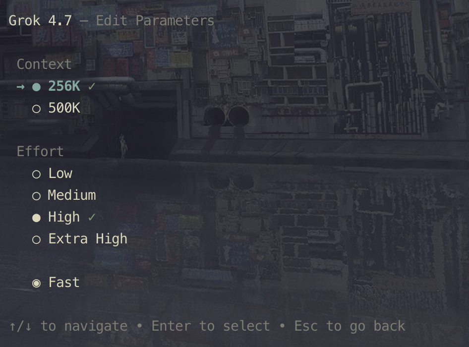

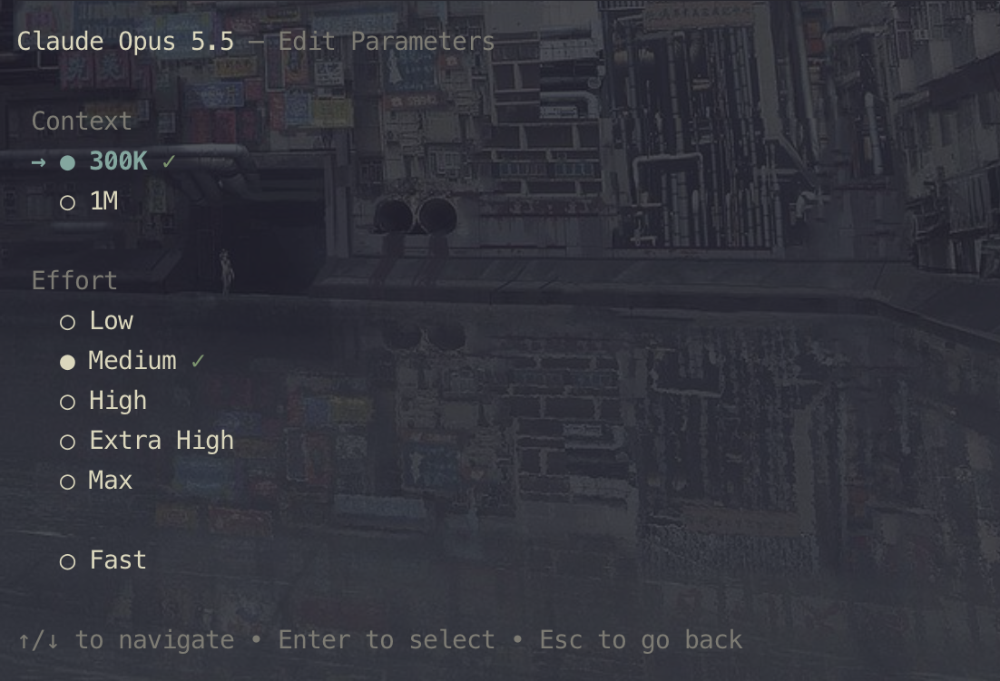

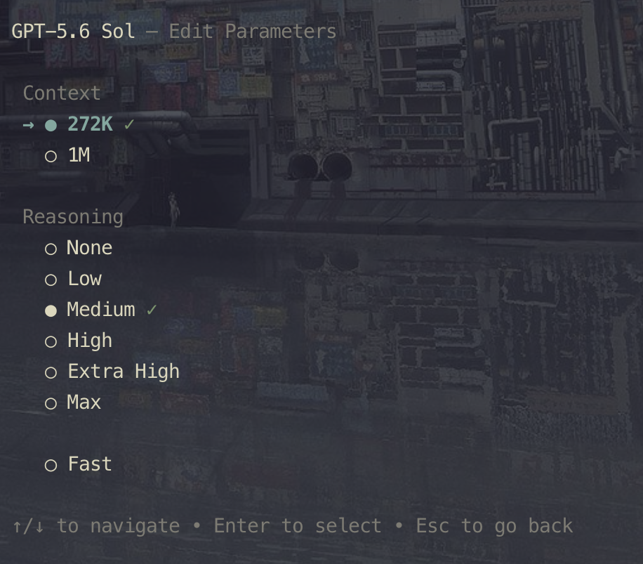

</split>

> 📌 **Rule:** name the engine before you turn the key.

<!-- .element: style="font-size: 2.0rem" class="fragment" data-fragment-index="1" -->
</div></script></section><section data-markdown><script type="text/template"><!-- .slide: class="drop" -->
<div class="" style="position: absolute; left: 0px; top: 0px; height: 800px; width: 1600px; min-height: 800px; display: flex; flex-direction: column; align-items: center; justify-content: center" absolute="true">

### 🎛️ Where you switch it

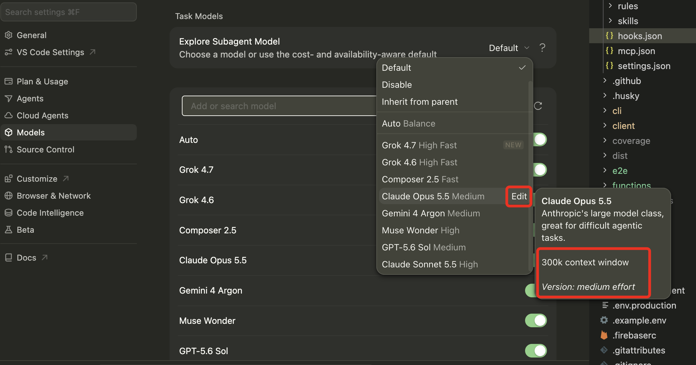


> 💡 Tip: the default is a habit. Make it a cheap one.

<!-- .element: style="font-size: 2.0rem" class="fragment" data-fragment-index="1" -->
</div></script></section><section data-markdown><script type="text/template"><!-- .slide: class="drop" -->
<div class="" style="position: absolute; left: 0px; top: 0px; height: 800px; width: 1600px; min-height: 800px; display: flex; flex-direction: column; align-items: center; justify-content: center" absolute="true">

<style>
.container {
  width: 100%; 
  display: flex; 
  flex-direction: column;
  justify-content: space-between;
padding: 0 10px;
}

.container-header {
 display: flex;
  width: 100%;
  justify-content: center;
  align-items: center;
}

.container-body {
  width: 100%;
  flex-direction: row;
  display: flex;
  flex: 1 1 auto;
	padding: 0 20px;
}

.container-body-left {
  width: 50%;
  height: 100%;
  flex: 1;
  display: flex;
  justify-content: center;
}

.container-body-right {
  width: 50%;
  height: 100%;
  flex: 1;
  display: flex;
  justify-content: center;
}
</style>

<div class="container">
<div class="container-header">
<div class="block">

### 🧠 Reasoning models pause on purpose

</div>


</div>
<div class="container-body">
<div class="container-body-left">
<div class="block">


</div>


</div>
<div class="container-body-right">
<div class="block">

**Reasoning model:**

- pause, test the logic, break the problem down
- Critique the partial answer and backtrack
- Stronger on logic, math, and code — pricier on every token

<!-- .element: style="font-size: 1.6rem" -->

</div>


</div>
</div>


</div>
</div></script></section><section data-markdown><script type="text/template"><!-- .slide: class="drop" -->
<div class="" style="position: absolute; left: 0px; top: 0px; height: 800px; width: 1600px; min-height: 800px; display: flex; flex-direction: column; align-items: center; justify-content: center" absolute="true">

### 🛑 Premium tier on autopilot


<div class="block">

Using the deepest thinking model for lint fixes is like taking a **Boeing 747 to the
corner store**.

Fine once. Expensive as a habit.

</div>


<!-- .element: style="font-size: 2.0rem" -->

> ⛽ Save the big engine for the mountain pass.

<!-- .element: style="font-size: 2.0rem" class="fragment" data-fragment-index="1" -->
</div></script></section></section><section ><section data-markdown><script type="text/template"><!-- .slide: class="has-light-background drop" data-background-color="#e5f3e0" -->
<div class="" style="position: absolute; left: 0px; top: 0px; height: 800px; width: 1600px; min-height: 800px; display: flex; flex-direction: column; align-items: center; justify-content: center" absolute="true">

## Right Prompt


</div></script></section><section data-markdown><script type="text/template"><!-- .slide: class="drop" -->
<div class="" style="position: absolute; left: 0px; top: 0px; height: 800px; width: 1600px; min-height: 800px; display: flex; flex-direction: column; align-items: center; justify-content: center" absolute="true">

### ✍️ Prompts that don't waste fuel

- **One job per message** — split "implement + test + docs"
- **Set the limits first** — files, patterns, what's out of scope
- **Examples &gt; adjectives** — show one good diff, not "make it clean"
- **Link, don't paste** — `@file`, `@folder`, `@Docs`

> 📌 **Rule:** specific beats polite. "Fix login 401 in <code>auth.ts</code>" beats a
> paragraph of praise.

<!-- .element: style="font-size: 2.0rem" class="fragment" data-fragment-index="5" -->
</div></script></section><section data-markdown><script type="text/template"><!-- .slide: class="drop" -->
<div class="" style="position: absolute; left: 0px; top: 0px; height: 800px; width: 1600px; min-height: 800px; display: flex; flex-direction: column; align-items: center; justify-content: center" absolute="true">

### ❌ vs ✅ — same bug, different bill

**🔴 burns tokens**

<!-- prettier-ignore -->
```text
You are a world-class senior engineer. Our login is broken.
Please investigate the entire authentication system, fix all
related issues, add tests, update docs, and refactor if needed.
```

**🟢 ships the fix**

<!-- prettier-ignore -->
```text
401 after refresh — repro: login → wait 15m → click Profile.

@src/auth/tokenService.ts @src/api/httpClient.ts

Fix refresh flow only. Out of scope: UI, signup, other routes.
Done when: existing auth.test.ts passes; no new deps.
```

<!-- .element: style="font-size: 1.35rem" -->
</div></script></section><section data-markdown><script type="text/template"><!-- .slide: class="drop" -->
<div class="" style="position: absolute; left: 0px; top: 0px; height: 800px; width: 1600px; min-height: 800px; display: flex; flex-direction: column; align-items: center; justify-content: center" absolute="true">

### 📎 `@` mentions — what to attach when

<div class="block">

| Situation             | Attach                                      | Skip                 |
| --------------------- | ------------------------------------------- | -------------------- |
| Bug in one feature    | `@src/features/login/` + error snippet      | `@Codebase`          |
| "Follow this pattern" | `@src/components/Button.tsx` as the example | The whole design doc |
| API contract question | `@openapi.yaml` or `@src/types/api.ts`      | A Postman export     |
| Config / env issue    | `@.env.example` `@docker-compose.yml`       | Real secrets         |

</div>


<!-- .element: style="font-size: 1.75rem" -->

> 💡 Tip: **2–5 files near the change** beats "let the Agent explore."

<!-- .element: style="font-size: 2.0rem" class="fragment" data-fragment-index="1" -->
</div></script></section><section data-markdown><script type="text/template"><!-- .slide: class="drop" -->
<div class="" style="position: absolute; left: 0px; top: 0px; height: 800px; width: 1600px; min-height: 800px; display: flex; flex-direction: column; align-items: center; justify-content: center" absolute="true">

### 🗑️ Prompts that scan the map

- "Check the whole repo for every commit where `add` changed"
- "I have an authorization issue, please fix it"
- "Read `error.log` and find every suspicious request"
- "Find `fooBar` and rename it to `fizzBazz`"

> 📌 **Rule:** a rename is an <code>@</code> mention. A bug needs a repro and a file.

<!-- .element: style="font-size: 2.0rem" class="fragment" data-fragment-index="5" -->
</div></script></section><section data-markdown><script type="text/template"><!-- .slide: class="drop" -->
<div class="" style="position: absolute; left: 0px; top: 0px; height: 800px; width: 1600px; min-height: 800px; display: flex; flex-direction: column; align-items: center; justify-content: center" absolute="true">

### 🌊 Prompts that boil the ocean

Notification system: "Implement a complete notification system that fits the existing
architecture. Explore the codebase, determine the best design, handle all edge cases,
integrate it with existing functionality, add tests and documentation, and make any
necessary improvements to related modules."

Tests: "Analyze the entire codebase and create comprehensive unit, integration, and
end-to-end tests for all functionality. Cover all edge cases, maximize test coverage, run
the full test suite, and fix any failing tests until everything passes."

SOLID: "Review the entire codebase and refactor it to follow SOLID principles, clean
architecture, DRY, and best practices. Improve naming, remove duplication, simplify
complex logic, and make the code more maintainable without changing existing behavior."
</div></script></section><section data-markdown><script type="text/template"><!-- .slide: class="drop" -->
<div class="" style="position: absolute; left: 0px; top: 0px; height: 800px; width: 1600px; min-height: 800px; display: flex; flex-direction: column; align-items: center; justify-content: center" absolute="true">

### 🔧 Good prompt — refactor one target

<!-- prettier-ignore -->
```text
Refactor [specific function, component, or module]
to [specific improvement].

Preserve existing behavior and public interfaces.
Follow project conventions.
No unrelated cleanup or architecture changes.

Update tests only where necessary.
Run the relevant checks.
Summarize the changes and any behavioral differences.
```

<!-- .element: style="font-size: 1.45rem" -->
</div></script></section><section data-markdown><script type="text/template"><!-- .slide: class="drop" -->
<div class="" style="position: absolute; left: 0px; top: 0px; height: 800px; width: 1600px; min-height: 800px; display: flex; flex-direction: column; align-items: center; justify-content: center" absolute="true">

### 🔍 Good prompt — explain, don't edit

<!-- prettier-ignore -->
```text
Analyze [module / component]. Explain its responsibilities,
public interfaces, and key dependencies.

Start at the entry point and the files next to it.
Expand only when you must, to understand the behavior.

Do not modify code.
Concise summary, with file references.
```

<!-- .element: style="font-size: 1.45rem" -->
</div></script></section><section data-markdown><script type="text/template"><!-- .slide: class="drop" -->
<div class="" style="position: absolute; left: 0px; top: 0px; height: 800px; width: 1600px; min-height: 800px; display: flex; flex-direction: column; align-items: center; justify-content: center" absolute="true">

### 🏗️ Good prompt — implement against a checklist

<!-- prettier-ignore -->
```text
Implement [feature]. Acceptance criteria:
- [Criterion 1]
- [Criterion 2]
- [Criterion 3]

First inspect the relevant code and name the pattern to follow.
Then implement with the smallest change.

Reuse existing utilities. No new deps unless required.
Add or update the relevant tests.
Run the targeted checks and report failures.
```

<!-- .element: style="font-size: 1.4rem" -->
</div></script></section></section><section  data-markdown><script type="text/template"><!-- .slide: class="drop" -->
<div class="" style="position: absolute; left: 0px; top: 0px; height: 800px; width: 1600px; min-height: 800px; display: flex; flex-direction: column; align-items: center; justify-content: center" absolute="true">

## Q&A


</div></script></section></div>
    </div>

    <script src="dist/reveal.js"></script>

    <script src="plugin/markdown/markdown.js"></script>
    <script src="plugin/highlight/highlight.js"></script>
    <script src="plugin/zoom/zoom.js"></script>
    <script src="plugin/notes/notes.js"></script>
    <script src="plugin/math/math.js"></script>
	<script src="plugin/mermaid/mermaid.js"></script>
	<script src="plugin/chart/chart.min.js"></script>
	<script src="plugin/chart/plugin.js"></script>
	<script src="plugin/menu/menu.js"></script>
	<script src="plugin/customcontrols/plugin.js"></script>
	<script src="plugin/chalkboard/plugin.js"></script>
	<script src="plugin/reveal-pointer/pointer.js"></script>
	<script src="plugin/elapsed-time-bar/elapsed-time-bar.js"></script>

    <script>
      function extend() {
        var target = {};
        for (var i = 0; i < arguments.length; i++) {
          var source = arguments[i];
          for (var key in source) {
            if (source.hasOwnProperty(key)) {
              target[key] = source[key];
            }
          }
        }
        return target;
      }

	  function isLight(color) {
		let hex = color.replace('#', '');

		// convert #fff => #ffffff
		if(hex.length == 3){
			hex = `${hex[0]}${hex[0]}${hex[1]}${hex[1]}${hex[2]}${hex[2]}`;
		}

		const c_r = parseInt(hex.substr(0, 2), 16);
		const c_g = parseInt(hex.substr(2, 2), 16);
		const c_b = parseInt(hex.substr(4, 2), 16);
		const brightness = ((c_r * 299) + (c_g * 587) + (c_b * 114)) / 1000;
		return brightness > 155;
	}

	var bgColor = getComputedStyle(document.documentElement).getPropertyValue('--r-background-color').trim();
	var isLight = isLight(bgColor);

	if(isLight){
		document.body.classList.add('has-light-background');
	} else {
		document.body.classList.add('has-dark-background');
	}

      // default options to init reveal.js
      var defaultOptions = {
        controls: true,
        progress: true,
        history: true,
        center: true,
        transition: 'default', // none/fade/slide/convex/concave/zoom
        plugins: [
          RevealMarkdown,
          RevealHighlight,
          RevealZoom,
          RevealNotes,
          RevealMath.MathJax3,
		  RevealMermaid,
		  RevealChart,
		  RevealCustomControls,
		  RevealMenu,
	      RevealPointer,
		  RevealChalkboard, 
		  ElapsedTimeBar
        ],


    	allottedTime: 120 * 1000,

		mathjax3: {
			mathjax: 'plugin/math/mathjax/tex-mml-chtml.js',
		},
		markdown: {
		  gfm: true,
		  mangle: true,
		  pedantic: false,
		  smartLists: false,
		  smartypants: false,
		},

		mermaid: {
			theme: isLight ? 'default' : 'dark',
		},

		customcontrols: {
			controls: [
				{ icon: '<i class="fa fa-pen-square"></i>',
				title: 'Toggle chalkboard (B)',
				action: 'RevealChalkboard.toggleChalkboard();'
				},
				{ icon: '<i class="fa fa-pen"></i>',
				title: 'Toggle notes canvas (C)',
				action: 'RevealChalkboard.toggleNotesCanvas();'
				},
			]
		},
		menu: {
			loadIcons: false
		}
      };

      // options from URL query string
      var queryOptions = Reveal().getQueryHash() || {};

      var options = extend(defaultOptions, {"width":1600,"height":800,"margin":0,"controls":true,"progress":true,"slideNumber":true,"transition":"slide","transitionSpeed":"default"}, queryOptions);
    </script>

    <script>
      Reveal.initialize(options);
    </script>
  </body>

  <!-- created with Advanced Slides -->
</html>
